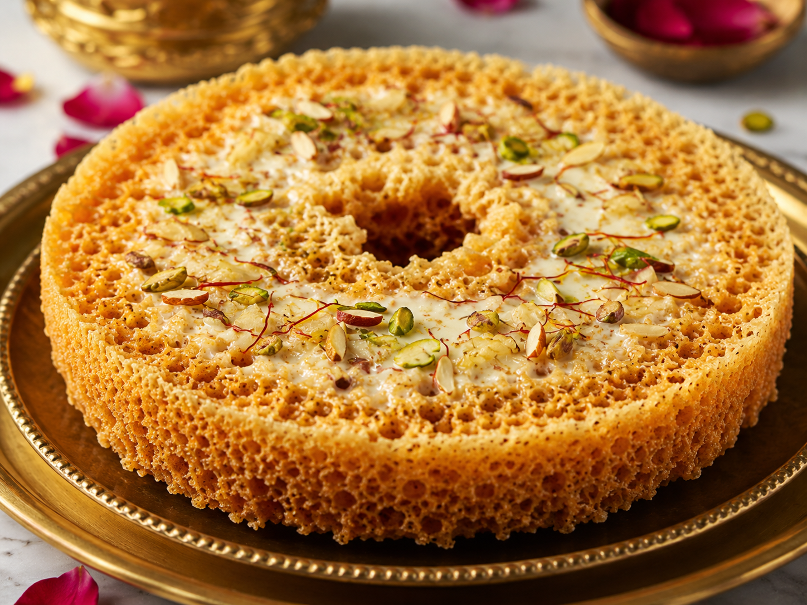

WELCOME TO RAJASTHAN
Discover the royal history, famous places, colourful culture, traditional food, beautiful art and marble heritage of Kishangarh.
Explore KishangarhDISCOVER
Kishangarh is a historic city of Rajasthan known for its royal heritage, beautiful paintings, temples, lakes and remarkable marble industry.
From the famous Bani Thani painting tradition to its marble markets, Kishangarh has a unique cultural identity.
KISHANGARH HIGHLIGHTS
Explore the royal heritage and fascinating history of Kishangarh.
Explore →Discover forts, palaces, temples, lakes and attractions.
Explore →Discover traditional flavours and famous Rajasthani sweets.
Explore →Learn about Bani Thani and Kishangarh's artistic heritage.
Explore →Discover Kishangarh's world-famous marble industry.
Explore →See photographs of places, culture, food and marble.
View Gallery →— Kishangarh, Rajasthan
